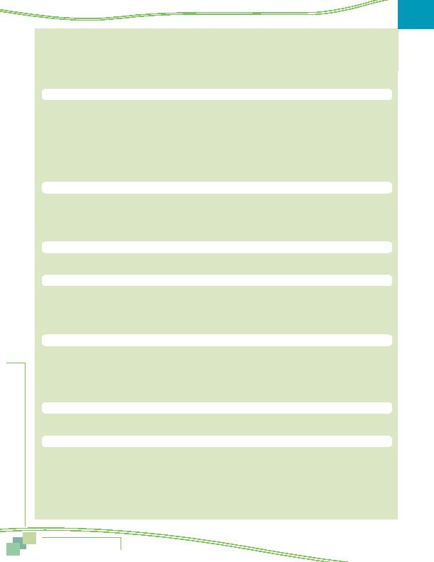

MWCOG-Comm
uter Conn
ecti
on
s-- 2010 State o
f th
e Comm
ute Report
7 2
COMPARISON OF KEY SOC RESULTS
2010, 2007, 2004, AND 2001
CURRENT TRAVEL INFORMATION
2010 2007 2004 2001
n
Current mode split
Percentage of weekly commute trips (including CWS and TC days)
DA/Motorcycle
64.2% 66.9% 71.4% 71.0%
CP
7.0% 6.9% 5.6% 6.9%
VP
0.1% 0.2% 0.3% 0.5%
Bus
5.7%
4.9%
4.4%
4.6%
Metrorail
13.5% 12.0% 11.5% 11.7%
Commuter
Rail
1.0% 0.8% 0.9% 0.7%
Bike/walk
2.3% 2.6% 2.2% 2.3%
CWS
0.6% 0.6% 0.7% 0.9%
Telecommute
5.7% 5.1% 2.3% 1.4%
n
Regular mode use
Percentages of weekly "on the road" commuter trips (without TC/CWS)
DA/Motorcycle
68.4% 71.0% 74.1% 72.6%
CP/VP
7.5% 7.6% 6.1% 7.6%
Bus
6.0%
5.2%
4.7%
4.6%
Train
15.5% 13.5% 12.8% 12.7%
Bike/walk
2.5% 2.7% 2.3% 2.4%
n
Average length of commute
Distance
16.3 mi
16.3 mi
16.2 mi
15.5 mi
Time
36 min
35 min
34 min
32 min
n
Work Non-standard/flexible schedules
No
67% 67% 69% 72%
Yes
33% 33% 31% 28%
4/40
2% 1% 2% 3%
9/80
4% 3% 3% 2%
Flextime
27% 29% 26% 22%
n
Length of time using current alternative modes
regional commuters who currently use alternative modes
1 11 months
18%
17%
23%
28%
12 24 months
11%
21%
23%
23%
25 36 months
11%
10%
9%
37 60 months
13%
13%
12%
49%
More than 60 months
47%
39%
33%
Average duration (months)
83
80
70
N/A
n
Carpool/Vanpool occupancy
Carpool/slug
2.5 2.5 2.6 2.6
Vanpool
7.6 9.9 10.0 11.4
n
Access mode to rideshare/transit modes
Picked-up at home
10%
12%
15%
16%
Drive to driver's home
10%
10%
11%
11%
Drive to central location
18%
18%
18%
14%
Another pool/dropped off
3%
1%
1%
1%
Walk
35% 35% 39% 39%
Drive
CP/VP
11% 10% 6% 9%
Bus/transit
12% 12% 9% 10%
Average access distance (mi)
2.6 mi
3.1 mi
3.1 mi
2.6 mi
Comparison of Key SOC Results